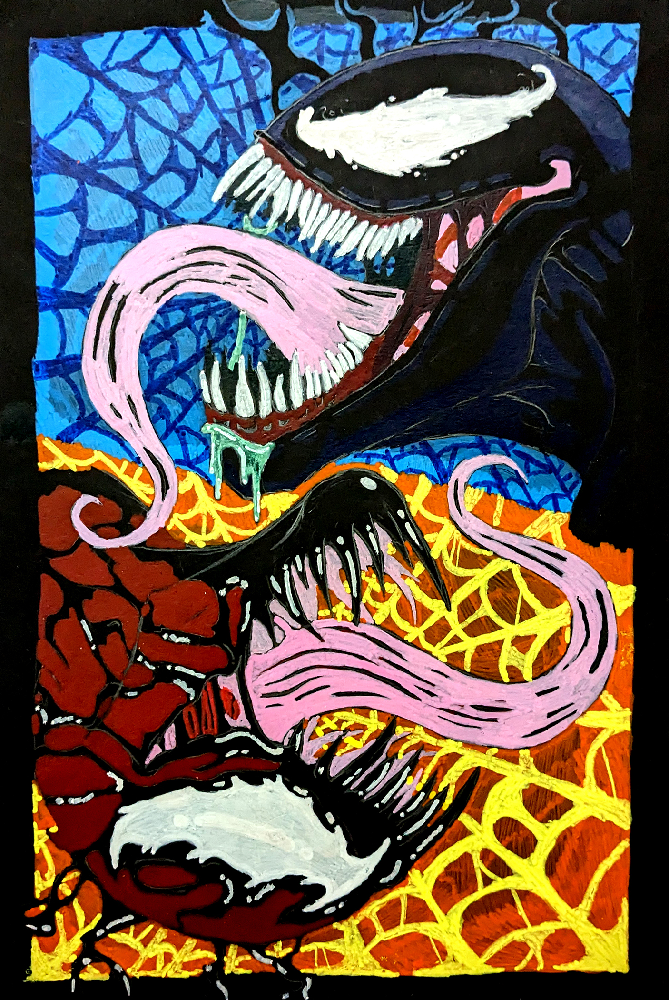

Practice Sketch
A simple practice sketch i did for my portfolio
A simple practice sketch i did for my portfolio

A detailed portrait I created for my portfolio

A dramatic scene I made back in highschool, inspired by Bendy and the dark revival

Practice sketch i made using Chiaroscuro for college

A retro-style painting I created for my portfolio

A colorful dog painting I created for my portfolio

A painting of green apples I created for my portfolio

A painting created using ink and wash techniques

A colorful house painting I created for my portfolio

A woodcut portrait I created for my highschool art class

A woodcut of the character Black Krrsantan from Star Wars

A woodcut of Darth Vader and the stormtroopers from Star Wars

A drawing of the characters Venom and Carnage from Spider-Man

A pastel drawing of a flower I created for my portfolio

A college assignment exploring texture and repetition

An abstract drawing I made using pastel colors

A drawing exploring the contrast of light and shadow

A drawing exploring the contrast of light and shadow

A drawing exploring the contrast of light and shadow

A drawing exploring the contrast of light and shadow

A drawing exploring the contrast of light and shadow

A drawing exploring the contrast of light and shadow

A drawing created on toned paper

A drawing created on toned paper